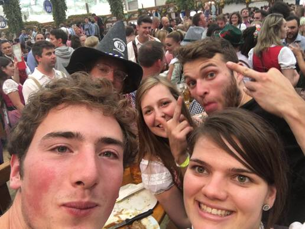
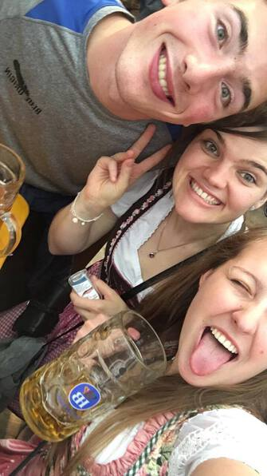
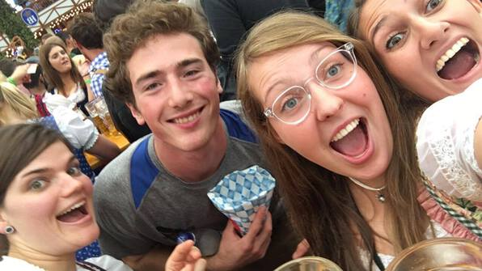

Entering Highlight Mode
The coolest thing about Oktoberfest was that Daniel’s frat buddies had woken up, unbeknownst to us, and gotten themselves the very best table in the entire Wiesn–the table above which loomed the podium where the mayor opened a keg, and the festival, the very day we were there. We wandered around and ran into aforementioned frat buddies, then joined them at aforementioned best table. It was really cool! Also people were taking pictures of us from the podium, check it:
We got to hear the mayor’s announcement, get 1 liter beers in 1 liter Masskruge, (I tried to fight for a free one but didn’t quite get it) and witness some madness.
Every so often a dude or gal would get up on one of the big tables with a full Masskruge and drain it. If they went too slowly, people would throw things at them–wads of paper, crusts of bread; and if they didn’t finish, jeering and booing would ensue. At one point a couple went up on the table, and the gal outdrank the guy, to intense booing. About half of everyone was wearing the traditional Lederhosen or Dirndl; it was really cool!
Then I went out to get food, had some fun German conversations with food vendors, had a great time, and got locked out of the tent! There were so many people trying to get in. No cell service, no way to contact Daniel or Gideon. I did what I did best–looked clueless–and some dude came up to me offering to sell a reservation to get back in. After a little bit I assessed him as genuine; we got some other people who also wanted to buy, I paid the dude my $10 and got back in :)
Caught back up to Daniel and Gideon and hung out with some München girls who’d invaded our table. They took lots of goofy selfies:



Had some more cool quasi-German conversations and lots of shenanigans with a wizard hat that Daniel had gotten. The bro got pretty toasted pretty fast and Gideon and I eventually left him with our ticket (he wanted to stay) and went back to the campsite ourselves, after walking around the festival.
In the light of recently acquired sobriety the proceedings at the campsite looked pretty ridiculous, so I crashed pretty quickly after re-civilizing myself with fresh clothes, etc.